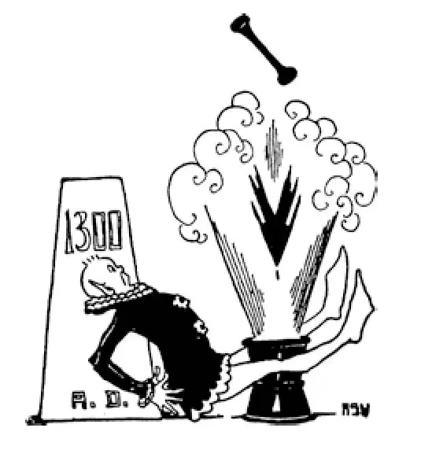

59
A Magic Needle and A Magic Powder
“魔针”和“魔粉”

ABOUT this same time that Marco Polo returned from his travels, people in Europe began to hear and talk about a magic needle and a magic powder that did remarkable things, and some said that Marco brought them back from Cathay, but now we know that it was Arab sailors who carried many of the wondrous things from China to the Mediterranean, where Europeans learned of them.
One of these wonderful things was a little magic needle. The little magic needle, when floated on a straw or held up only at its middle, would always turn towards the north no matter how much you twisted it. Such a needle put in a case was called a compass .
Now, you may not see why such a little thing was so remarkable. But strange as it may seem, this little thing really made it possible to discover a new world.
Perhaps you have played the game in which a child is blindfolded, twisted around several times in the center of the room, and then told to go toward the door or the window or some other point in the room. You know how impossible it is for one who has been so turned round to tell which way to go, and you know how absurd one looks who goes in quite the opposite direction when he thinks he is going straight.
Well, the sailor at sea was something like such a blind-folded child. Of course, if the weather were fine, he could tell by the sun or the stars which way he should go. But when the weather was cloudy and bad, there was nothing for him to go by. He was then like the blindfolded child. He might easily become confused and sail in just the opposite direction from the way he wanted to go without knowing the difference.
This was perhaps one of the chief reasons why most sailors, before the compass was used, had not gone far out of sight of land. They were afraid they might not be able to find their way back. So most sailors traveled only to that part of the world that could be reached without going far out of sight of land.
But, with the compass, sailors could sail on and on through storms and cloudy weather and keep always in the direction they wanted to go. They simply had to follow the little magnetic needle suspended in its box. No matter how much the boat turned or twisted or tossed, the little needle always pointed to the north. Of course sailors did not always want to go north, but it was very easy to tell any other direction if they knew which was north. South was exactly opposite, east was to the right, and west was to the left. All they had to do was to steer the boat on the course in whatever direction they wished.
It was a long while, however, before sailors would use a compass. They thought it was bewitched by some magic, and they were afraid to have anything to do with such a thing. Sailors are likely to be superstitious, and they were afraid that if they took the compass on board it might bewitch their ship and bring them bad luck.
The other magic thing was gunpowder.
Never before 1300 had there been such things in Europe as guns or cannons or pistols. All fighting had been done with bows and arrows or swords or spears or with some such weapons. A sword can only be used on a man a few feet away, but with guns an enemy may be killed and walls battered down miles away. After gunpowder was invented, the armor that the old knights wore was of course no longer of any use, for it could not protect them from shot and shell. Gunpowder has changed fighting completely and made war the terrible thing it has become.
Although Marco Polo was supposed to have told about gunpowder and its use in cannons as he had seen it in the East, most people think it was the Arabs who brought the knowledge to Europe. However it happened, we're sure it was in Asia that people first discovered how to put certain ingredients together that resulted in an explosive. It was quite a while, however, before gunpowder was made strong enough to do much damage. In fact, it was over a hundred years before fighting with guns entirely took the place of fighting with bows and arrows in Europe.
【中文阅读】
差不多在马可·波罗游历后回到祖国的同一时期，欧洲人开始听说和谈论起魔针和魔粉，这两件东西能做出不寻常的事情。有人说是马可·波罗从中国把这些东西带回来的，但是现在我们知道是阿拉伯水手把许多奇妙的东西从中国带到了地中海，这样欧洲人才知道了这些东西。
其中一个奇妙的玩意儿就是一根小小的魔针。这根小魔针，一旦放在一根稻草上或托住它的中间部分，那么无论你怎样旋转这根针，针都会永远指向北方。把它装进盒子里，就叫做“罗盘”。
好吧，也许你看不出为什么这个小玩意有多么神奇。可是不管事情看上去多么奇怪，这个小东西真的让发现新世界成为可能。
或许你玩过这样的游戏，蒙住一个小朋友的眼睛，让他在屋子中央转几圈，然后让他走向门、窗或屋子的其他地方。你知道让一个人转几圈，再分辨朝哪个方向走是不可能的。你也知道当一个人以为自己是直接走向目标，其实却是朝着相反的 方向走去，那时他显得多么滑稽可笑啊！
其实，出海航行的水手就有点像被蒙住双眼的孩子。当然，天气晴朗的时候，他能通过太阳或星星的方位判断出该朝哪个方向航行。但是当阴云密布，下雨或下雪的时候，他就无法判断了。这时他就像被蒙住双眼的孩子，很容易迷失方向，朝着与目的地相反的方向航行，而毫无觉察。
在使用罗盘之前，大多数水手都不去太远的地方，海岸线总在视野之内。这样做的主要原因之一，是担心可能找不到回去的路。所以大多数水手在世界上航行的区域仅限于在视线能看到岸边的范围内。
但是有了罗盘，水手即使在雷雨和乌云密布的天气里也能继续一直航行，而且始终保持朝着他们要去的方向。他们只要按照悬在盒子里的那根小魔针所指的方向航行就可以了。无论船只怎样打转、扭动或颠簸，小针总是指向北方。当然水手们不总是要去北方，但是如果知道了哪个方向是北，他们就很容易辨别其他方向。南方就正是相反的方向，东方就是朝右，西方就是朝左。他们所要做的就是掌好舵，让船保持在航线上。
不过水手们过了很久以后才用罗盘。他们认为这个东西被施了魔法，沾不得，害怕有不好的后果。水手都很迷信，他们担心如果把罗盘带上船，罗盘也许会对他们的船大施魔法，给他们带来厄运。
另一件有魔力的东西是火药。
公元1300年以前欧洲一直没有枪、炮或手枪这类东西。战争中使用的都是弓箭、刀剑、长矛或其他类似的兵器。一把剑只能刺中几尺以内的敌人，但是用枪炮却可以在几里以外杀死敌人，轰塌围墙。火药发明以后，古代骑士穿的盔甲显然就毫无用处了，因为盔甲根本挡不住炮弹和子弹。火药彻底改变了战争，让战争变成现在这样狰狞可怖。
虽然据推测马可·波罗讲述过他在东方见过火药和使用火药的大炮，但是大多数人认为是阿拉伯人把这种知识传到了欧洲。无论事情到底是怎样发生的，我们都可以确定，是亚洲人最早发现怎样把某些成分放在一起调制成炸药。不过，经过相当长的时间以后，火药才被制成威力十足、可以造成巨大伤害的武器。事实上，在欧洲，一百多年以后，枪炮才彻底代替弓箭，成为作战的武器。

公元1300年